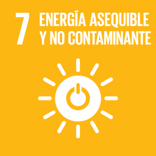
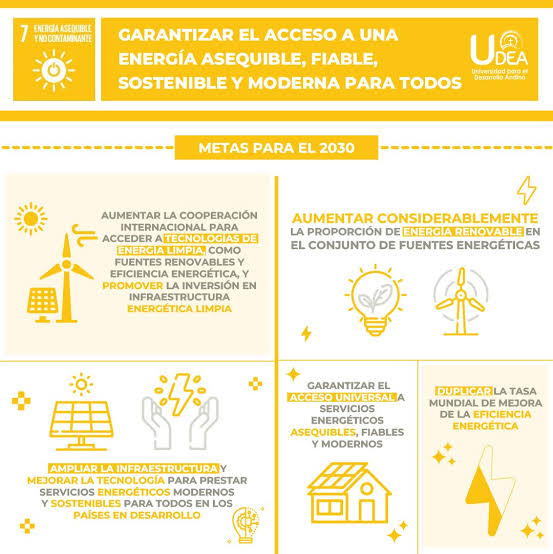

¿Qué es el Objetivo 7?
El Objetivo de Desarrollo Sostenible número 7 es una llamada de atención global para transformar la manera en que producimos y consumimos energía.
Su propósito principal es garantizar que todas las personas del planeta tengan acceso a una energía segura, moderna, económica y limpia.
Imagen del Objetivo:

Puntos clave de esta iniciativa
Esta introducción nos ayuda a comprender los pilares fundamentales del reto:
- Acceso Universal: Lograr que la electricidad llegue a todas las comunidades sin excepción.
- Transición Ecológica: Cambiar los combustibles fósiles por energías limpias como la solar y la eólica.
- Eficiencia Energética: Aprovechar mejor la energía consumiendo menos recursos.
- Innovación Tecnológica: Invertir en investigación para desarrollar nuevas alternativas sostenibles.
¿Por qué comenzar a estudiar este tema?
La energía mueve nuestro mundo día a día, pero la forma en que la obtenemos actualmente acelera el cambio climático.
A través de esta introducción comprenderás cómo las decisiones que tomamos hoy definirán el futuro de nuestro planeta.
